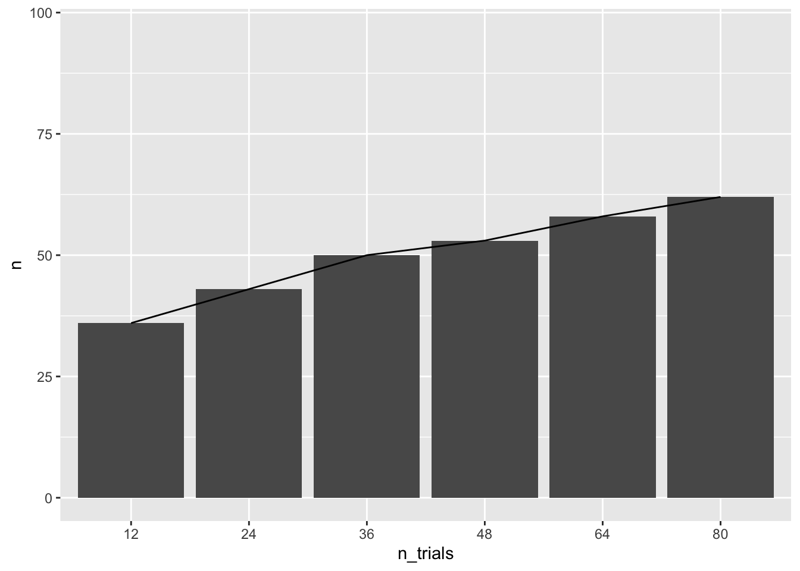
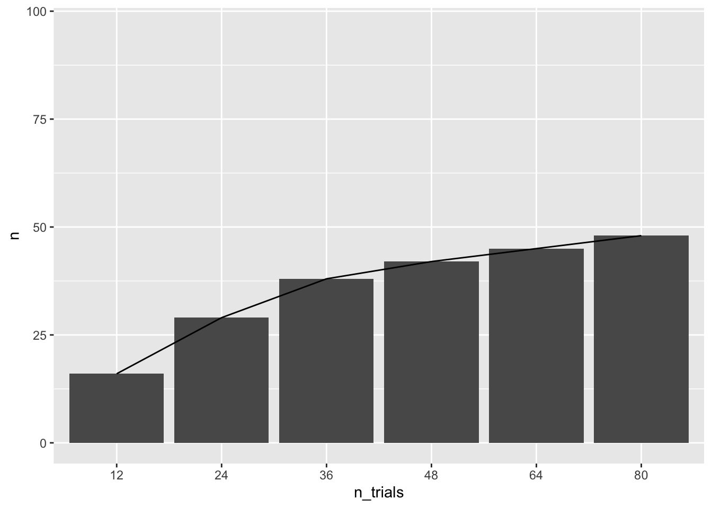
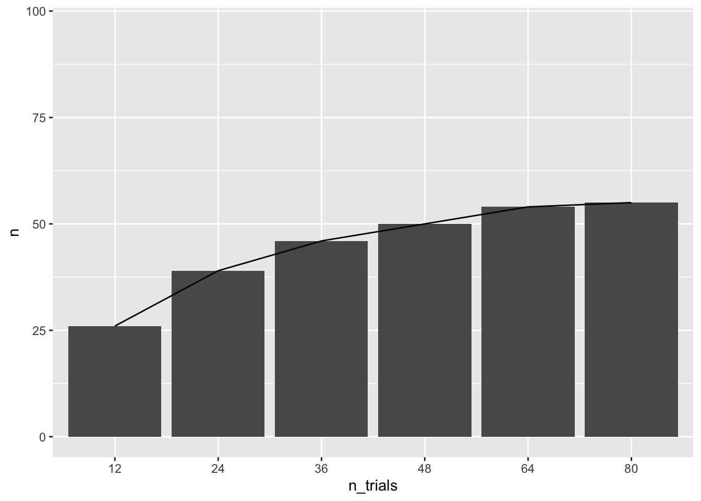
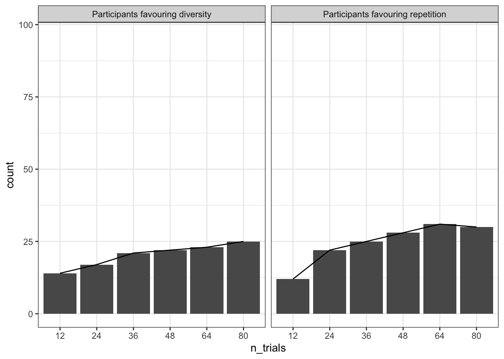

How many trials do we need to be able to detect an effect of source independence at the individual level?
Simulation method
I simulated this data based on real participant data from Alister, Ransom, and Perfors (2022). There were two main manipulations in this study: 2 consensus direction (i.e., whether the members of the consensus were arguing for or against the claim) X 2 consensus independence (i.e., whether the members of the consensus all shared the same primary source, or all shared different sources). This means there were four “cells” in the experiment. For each cell, I calculated the mean and standard deviation belief update (the difference between their 1-100 belief in the claim before versus after seeing the consensus). Using these means and standard deviations, I simulated either 3, 6, 9, 12, 16, or 20 trials per cell. Because there were 4 cells, this resulted in 6 data sets with 12, 24, 36, 48, 64, or 80 trials per participant.
Modelling
The goal of this simulation was to fit separate Bayesian linear models to each participant. Usually, what we do is fit these models to all of the participants, with participant as a random effect, in order to identify group level consensus effects, but this isn’t able to capture individual differences.
I kept the modelling reasonably simple, with a null model that only considers the consensus direction:
post ~ prior + direction
Against an alternative model that also considers source independence:
post ~ prior + direction + independence
One thing to keep in mind is that the models in the original study were not performed on the transformed “update” variable, but instead on their post score whilst accounting for their prior score as a control variable. I’m not sure how much of a difference this will make, but something to consider.
The general goal here is to see at which point increasing more trials does not appear to increase the number of participants best fit to the alternative model. Once that plateau begins to occur, then we should have a good idea of how many trials per participants we will need.
Code
# load combined outputload(here("simulation/output/all-output.Rdata"))n <-length(unique(all_output$ps))# Figure out which data sets still contained NAs despite correcting for instances where sd = 0 in real data. all_NA <-NULLhas_NA <-c()p <-c()for (i in1:n) {load(here(paste0("simulation/data/p",i,"-12-trials.Rdata"))) has_na <-any(is.na(sim_data$sideA)) p <- i d_iteration <-cbind(p,has_na) all_NA <-rbind(all_NA, d_iteration)}na_subjects <- all_NA[all_NA[,"has_na"]==1,]subjects_not_analysed <-c(na_subjects[,"p"], 58) # models didn't run on p58 (index 44) for some reason# filter subjects from all_outputall_output <- all_output %>%filter(!ps %in% subjects_not_analysed)# calculate new n with participants removedadjusted_n <-length(unique(all_output$ps))
Number of participants best fit to the alternative model by the number of trials
Using LOOIC, this analysis compared which participants were best fit to the alternative model versus the null model.
Code
# see how many people were best fit by the alternative model as a function of n trials. alt <- all_output %>%filter(best_model =="alt")alt %>%group_by(n_trials) %>%summarise(n =n()) %>%ggplot(aes(x = n_trials, y = n, group =1)) +ylim(0,adjusted_n)+geom_col()+geom_line()

Number of participants with 95% credible estimates on the independence parameter
Another way to evaluate consensus independence is to look at the estimate and associated credible intervals of the independence parameter.
Code
# see how many people had credible estimates as a function of n trials. all_output$estimate_contains_0_95 <-with(all_output, lower95 <0& upper95 >0)all_output$estimate_contains_0_89 <-with(all_output, lower89 <0& upper89 >0)credible_estimates_95 <- all_output %>%filter(estimate_contains_0_95 ==FALSE) credible_estimates_89 <- all_output %>%filter(estimate_contains_0_89 ==FALSE) credible_estimates_95 %>%group_by(n_trials) %>%summarise(n =n()) %>%ggplot(aes(x = n_trials, y = n, group =1)) +ylim(0,adjusted_n)+geom_col()+geom_line()

It has been argued that a 95% credible interval is not actually the most appropriate for Bayesian credible intervals, since unless you have an effective sample size (ESS) of at least 10,000, a 95% credible interval is not very stable (Kruschke 2014). An alternate interval is the 89% credible interval, which is much more stable for the ESS that we will have in our study (around 4000; Kruschke (2014)).
Number of participants with 89% credible estimates on the independence parameter
Code
credible_estimates_89 %>%group_by(n_trials) %>%summarise(n =n()) %>%ggplot(aes(x = n_trials, y = n, group =1)) +ylim(0,adjusted_n)+geom_col()+geom_line()

Looking at whether people had a preference for source diversity or repetition
A credible estimate of independence, or a model comparison favoring the alternative model only tells us whether there was an effect of consensus independence, but it does not tell us whether people preferred independent (diverse sources) or dependent (repeated) sources. People could reasonably have a preference for either, since diversity indicates more of the hypothesis spaces has been searched, whereas repetition might suggest that the source is more reliable, since it has been endorsed by more people. We can determine whether people had a preference for either by looking at the sign of the independence parameter. If it is positive, that person had a preference for diversity. If it was negative that person had a preference for repetition.
Code
# see how many people had estimates in line with someone senistive to independence (positive estimate) v dependence (negative estimate)credible_estimates_89$positive <- credible_estimates_89$ind_estimate >0credible_estimates_89$negative <- credible_estimates_89$ind_estimate <0sum_pos <- credible_estimates_89 %>%group_by(n_trials) %>%summarise(count =sum(positive)) %>%mutate(sign ="Participants favouring diversity")sum_neg <- credible_estimates_89 %>%group_by(n_trials) %>%summarise(count=sum(negative)) %>%mutate(sign ="Participants favouring repetition")sum <-bind_rows(sum_pos, sum_neg)sum %>%ggplot(aes(x = n_trials, y = count, group =1)) +ylim(0,adjusted_n)+geom_col()+geom_line()+facet_wrap(~sign)+theme_bw()

I’m not sure if this tells us much about experimental power, but interesting to see that in the simulated data at least, there different strategies are split pretty evenly. It is possible that the repetition effects are smaller, which is why there is a bigger difference in n as a function of trials.
Topic Analyses
Are there some clusters which tend to elicit effects more than others?
One way— regression on each claim, get the estimates of those claims then cluster them?
Code
# laod emperical data from E3 of ALister et al. 2022load("~/Documents/Projects/Consensus/indycon-indi/data/experiment-3-2022/data.2.rdata")data <- data.2
With just 12 topics, this is probably very under powered. Let’s simulate some more topics based on the actual mean and standard deviations of each topic according to each dimension and see how the topic estimates change.
Alister, Manikya, Keith James Ransom, and Andrew Perfors. 2022. “Source Independence Affects Argument Persuasiveness When the Relevance Is Clear.”Proceedings of the Annual Meeting of the Cognitive Science Society 44 (44). https://escholarship.org/uc/item/5hg4p8cm.
Kruschke, John. 2014. Doing Bayesian Data Analysis: A Tutorial with R, JAGS, and Stan. Academic Press.